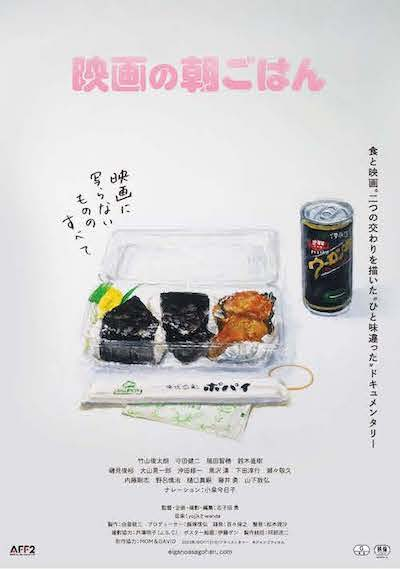

TOP
シーセイ、朝ご飯、サブスク
★yojikとwanda ニューアルバム『シーセイ』
2025年4月27日発売！

★ドキュメンタリー映画「映画の朝ごはん」音楽担当
ドキュメンタリー映画「映画の朝ごはん」の主題歌と劇伴を担当しました。
劇中の演奏シーンでも登場しているのでぜひチェックしてみてください！
映画の詳細はこちら！
食と映画。二つの交わりを描いた ″ ひと味違った ″ ドキュメンタリー
- 映画に写らないもののすべて -
公式X 🍙 @eiganoasagohan
公式Instagram 🍙 @eiganoasagohan
竹山俊太朗 守田健二 福田智穂 鈴木直樹 磯見俊裕 大山晃一郎 沖田修一 黒沢 清 下田淳行 瀬々敬久 内藤剛志 野呂慎治 樋口真嗣 藤井 勇 山下敦弘 ナレーション：小泉今日子 監督・企画・撮影・編集：志子田 勇 音楽：yojikとwanda 製作：由里敬三 プロデューサー：飯塚信弘 録音：百々保之 整音：松本理沙 撮影協力：芦澤明子（J.S.C）ポスター絵画：伊藤ゲン 制作統括：阿部浩二 制作協力：MOM＆DAVID 2023年/DCP/131分/ドキュメンタリー 助成：AFF2 ©ジャンゴフィルム

【３作品サブスクリリースのお知らせ】
2025年4月、「シーセイ」含む３アルバムを各種サブスクリリースしました!
2015年発表の「フィロカリア」
2019年発表の「ナイトレイン」
2025年発表の「シーセイ」
ココから行けます。
テストテキスト